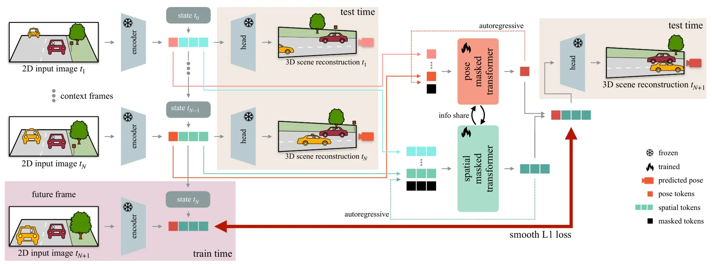
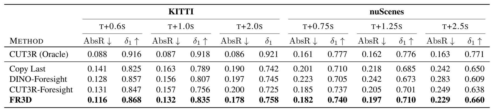
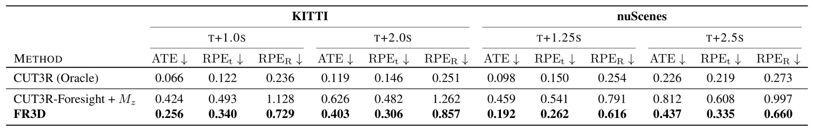
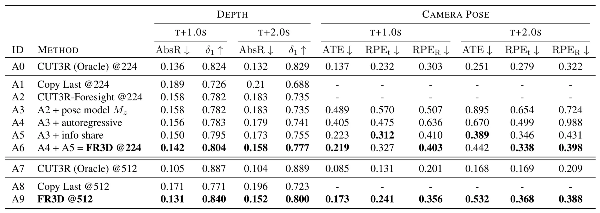
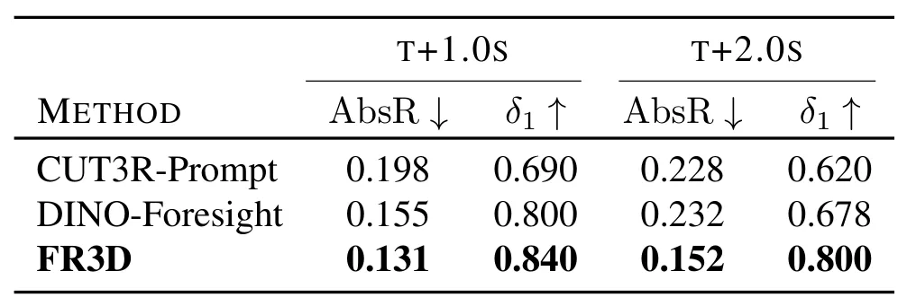
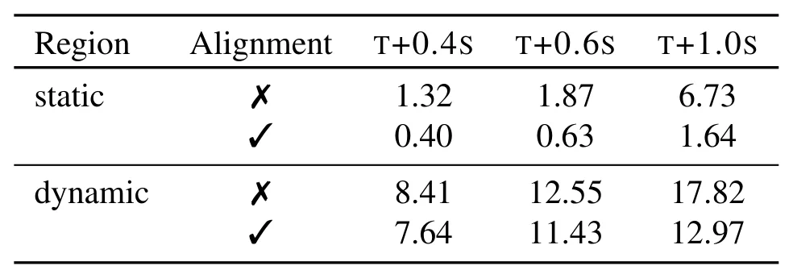
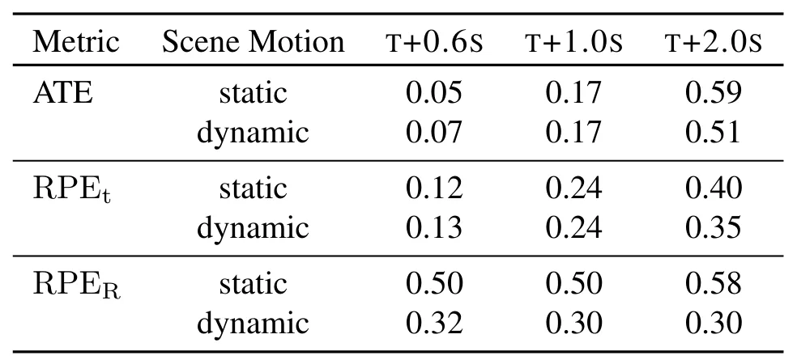

未来动态三维重建：解耦自运动的三维世界模型Future Dynamic 3D Reconstruction: A 3D World Model with Disentangled Ego-Motion
不是定位/建图后端，但与动态场景理解、预测式三维地图和自动驾驶 world model 相关；值得关注其 3D 表示能否与 SLAM 地图、占据预测或 NeRF/3DGS 接口结合。
一句话工作总结
FR3D 用持久 3D latent 表示预测未来动态场景，并显式把 ego-motion 与世界动态解耦，以减少 2D world model 的几何不一致。
摘要
预测动态环境演化对自主智能体很重要。近期生成式 world model 在 2D 视频合成上取得高真实感，但常把自车运动和环境动态混在图像平面内，导致长时域中出现物体形变或消失等物理不一致。FR3D 提出一个预测未来动态三维重建持久 3D latent 表示的世界模型。与把世界看作图像特征序列的方法不同，FR3D 显式解耦场景三维演化和智能体轨迹，把推断出的 ego-motion 当作 latent action proxy，从而降低 self-motion 与 world-motion 的歧义并保持未来几何一致性。方法还引入 teacher-student distillation，借助现成 foundation model 的空间常识提升 zero-shot 泛化。多数据集实验显示，FR3D 能从单目观测预测未来动态 3D 重建，时域可达约 2 秒。
Forecasting the evolution of dynamic environments is crucial for autonomous agents. While generative world models have recently achieved high photorealism in 2D video synthesis by mixing ego-motion and environmental dynamics within the image plane, they exhibit physical inconsistencies, such as morphing or vanishing objects, especially over long time horizons. In this paper, we propose FR3D, a world model that predicts a persistent 3D latent representation for future dynamic 3D reconstruction. Unlike prior works that treat the world as a sequence of image-based features, FR3D explicitly decouples the 3D evolution of the scene from the agent's trajectory, treating the inferred ego-motion as a latent proxy for action. This disentanglement resolves the ambiguities between self-motion and world-motion, ensuring geometric consistency into the future. Furthermore, we introduce a teacher-student distillation strategy that leverages the spatial "common sense" of off-the-shelf foundation models, leading to robust zero-shot generalization. Extensive experiments demonstrate FR3D's strong performance for future dynamic 3D reconstruction from monocular observations across multiple datasets, even 2 seconds into the future. Project page: https://fr3d-wm.github.io.
中文解读摘录
- 链接：abs / PDF；项目页：https://fr3d-wm.github.io；作者：Nils Morbitzer, Jonathan Evers, Artem Savkin, Thomas Stauner, Nassir Navab, Federico Tombari, Stefano Gasperini；类别：cs.CV；采集 score=9；ICML 2026。
- 核心思路：从单目观测预测未来动态环境的持久 3D latent 表示，同时把自车运动作为 latent action/proxy 与世界动态解耦。
- 方法要点：避免传统 2D 视频 world model 把 ego-motion 和物体运动混在图像平面里导致物体形变/消失；通过 teacher-student distillation 借助 foundation model 的空间先验提升 zero-shot 泛化。
- 关注点：它不是 SLAM 后端，但对自动驾驶/机器人预测式地图、动态占据场景和未来 3D 重建有参考价值；建议看输出 3D 表示是否能和轨迹/占据网格/NeRF-3DGS 地图接口对齐。
图表/页面预览

{kind=link}

{kind=link}

{kind=link}

{kind=link}

{kind=link}

{kind=link}

{kind=link}
